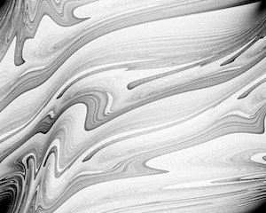

Building a QPU simulator in Julia - Part 1
Just for a kicks, I started rewriting Quko, my simple quantum computing simulator, in clojure. I thought that having powerful linear algebra libraries like Neanderthal would help simplify the task but it didn’t feel right. I decided to put it on hold until I got some inspiration.

So, I started looking again at complexity theory. I was lead via logistic maps, and other dynamic systems to a library called DynamicSystems.jl written in a language called Julia. I remembered having seen Julia two years ago from another talk on simulating spiking neural networks using Julia.
The things that were bothering me in Kotlin and Clojure when building the QPU simulator were complex numbers and linear algebra, specifically the Krondecker product, and it turns out that Julia supports both natively! So it was worth giving it a try1.
1 Edit: For a nice guide through Julia syntax take a look at the ThinkJulia online book. It pretty much covers all the basic and is very easy to understand.
2 You can use it from Jupyter, if you prefer. I wrote down how to do that in a separate note. The community overlap with Python is understandable.
Installing Julia on a Mac is as simple as you might expect2
> brew install julia
...Like Clojure, Julia has a nice REPL for developing and testing ideas quickly. Built-in support for vectors means that defining a qubit is easy3:
3 Julia uses 64-bit floats by default. We don’t need that level of precision and 32-bit floats save memory, a simple but important consideration for QPU simulators.
julia> qubit = Float32(1) * [1, 0]
2-element Array{Float32,1}:
1.0
0.0Julia has dynamic typing so the variable type doesn’t need to be set explicitly. The Hadamard operator[^hadamard] is similarly easy to define with Julia’s matrix syntax:
julia> H = Float32(1/sqrt(2)) * [1 1; 1 -1]
2×2 Array{Float32,2}:
0.707107 0.707107
0.707107 -0.707107
julia> H * qubit
2-element Array{Float32,1}:
0.70710677
0.70710677Taking it a step further we can use complex numbers natively. For example, we are able to define the \[\sqrt{NOT}\] gate[^sqrtnot] almost as easily:
julia> halfX = Float32(0.5) * [1+im 1-im; 1-im 1+im]
2×2 Array{Complex{Float32},2}:
0.5+0.5im 0.5-0.5im
0.5-0.5im 0.5+0.5im
julia> halfX * qubit
2-element Array{Complex{Float32},1}:
0.5f0 + 0.5f0im
0.5f0 - 0.5f0imWe can test that it’s unitary using the conjugation operator, ', and the @test macro:
julia> using Test
julia> @test halfX'*halfX ≈ [1 0; 0 1]
Test PassedIt’s normal in Julia to use Unicode characters directly. This is strange at first but makes formulas very succinct. In the above test we used the ≈ character4 to perform a machine-precision equality test.
4 In the REPL, type \approx and then press Tab.
Being a functional language, it’s straightforward to turn our operators into functions. X is the quantum NOT operator:
julia> X = (qubit) -> Float32(1) * [0 1; 1 0] * qubit
#3 (generic function with 1 method)
julia> @test X(X(qubit)) ≈ qubit
Test PassedThis language really is a close to perfect for my project! Serendipity[^serendipity] is a wonderful thing.